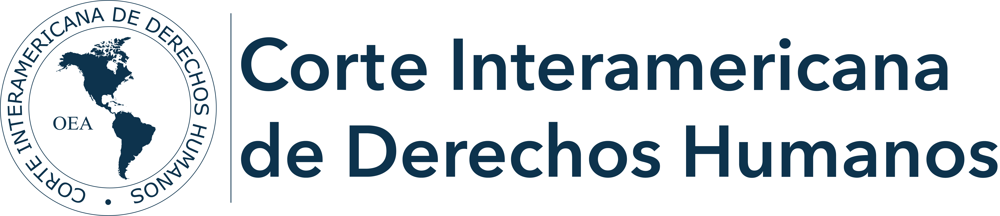
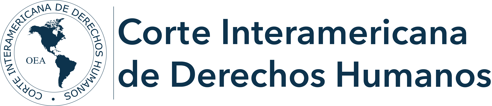

Violencia:
La violencia es descrita como el hecho de agredir a una persona tanto física, psicológicamente, verbalmente, económica y sexual. La violencia puede darse a través de agresión física, verbal o monetaria. El tipo de violencia más común en el perú es La violencia psicológica con el 52.8% de la población, luego la violencia física con el 29.5% y la violencia sexual con el 7.1%
Acoso:
El acoso es una parte de la violencia, el acoso se refiere al hecho de molestar e incomodar a una persona de distintas maneras. El bullying es parte del acoso y este se divide en 2, bullying y cyberbullying, y de eso salen mas ramas, acoso sexual, psicológico, verbal o fisico, etc.
Discriminación:
La discriminación es cuando una persona no puede disfrutar de sus derechos humanos debido a una desigualdad de raza, creencia, género o económica. El estudio detalla que más de la mitad de peruanos y peruanas se han sentido discriminadas. Un 28% identificó a su color de piel como la causa, el 20% dijo que fue por su nivel de ingresos/dinero, mientras que el 17% sostuvo que fue por sus rasgos faciales o físicos. Y estos no son los únicos tipos de discriminación el 74.9% de las mujeres peruanas sufren de discriminación de género.
Caso Discriminación:
Título del caso: Sentencia contra discriminación racial reivindica dignidad a mujer afroperuana
Azucena Algendones, una mujer huancaína, fue discriminada en el 2012 por una compañera de su centro de labores, por ser afroperuana. Pese a reportar estos hechos, el gerente y jefe del Área de Recursos Humanos, no sólo no tomaron acciones, sino que se sumaron a los actos racistas. Esto tuvo un impacto a nivel social, pues a raíz de ello se implementaron ordenanzas municipales contra este tipo de discriminación.
Casi acoso
Detienen a sujeto que acosó sexualmente a joven dentro del Metropolitano
El viernes 28 de abril, un caso más de acoso sexual se registró dentro de los buses del Metropolitano. Un hombre mostró sus partes íntimas y acosó a una joven que viajaba a su centro de trabajo. Debido a la rápida acción de la mujer de denunciar la agresión, los pasajeros del bus atraparon al individuo, quien negaba los hechos.
Caso violencia
Denuncian presunto caso de violencia sexual en colegio nacional de Trujillo
 
